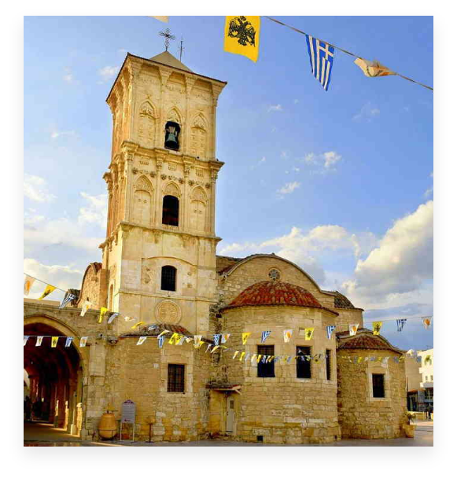

Жители Ларнаки имеют возможность посетить и насладиться многими достопримечательностями и памятниками как внутри, так и за пределами города: византийская церковь Святого Лазаря, датируемая 890 годом н.э.; Монастырь Ставровуни, построенный святой Еленой, матерью Константина Великого, в 330 году н.э. и в котором размещен фрагмент Святого Креста Иисуса, который был заложен там самой Святой Еленой. Хала-султан Текке, или мечеть Умм-Харам, одна из самых священных мусульманских святынь; и набережная пальмы вдоль главной набережной Ларнаки.
Четыре из пляжей города получили награду международного синего флага за качество их вод и услуг.
Немного дальше в глубь страны, Соленое озеро Ларнаки (Алики) предоставляет дом для розовых фламинго, которые каждую зиму посещают Кипр.
В нескольких минутах езды от города вы можете найти множество живописных деревень, которые по-прежнему сохраняют более старый образ жизни и предлагают тихое отступление от города.
